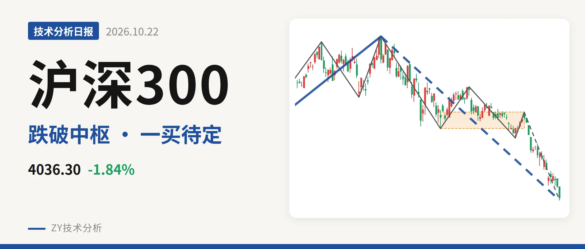
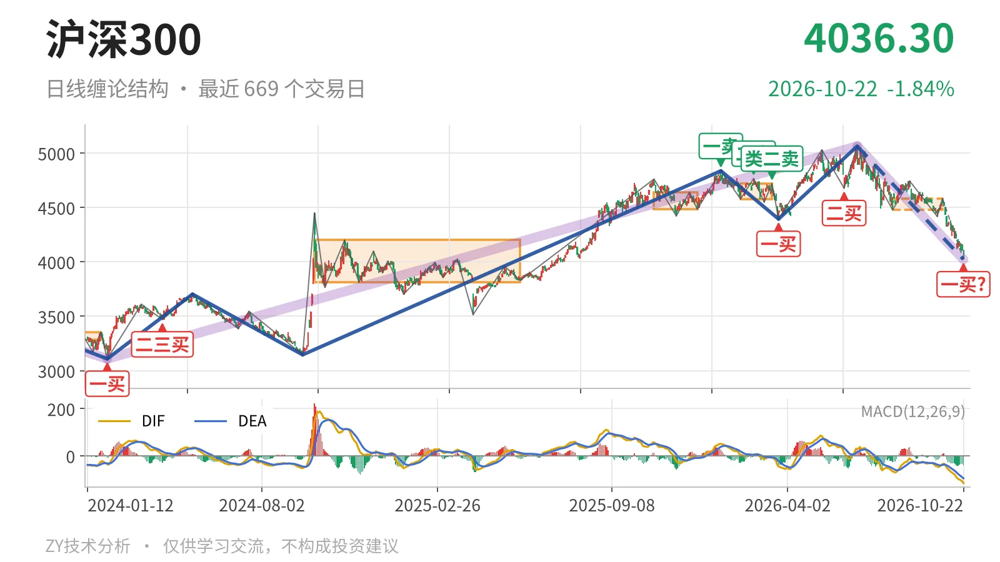
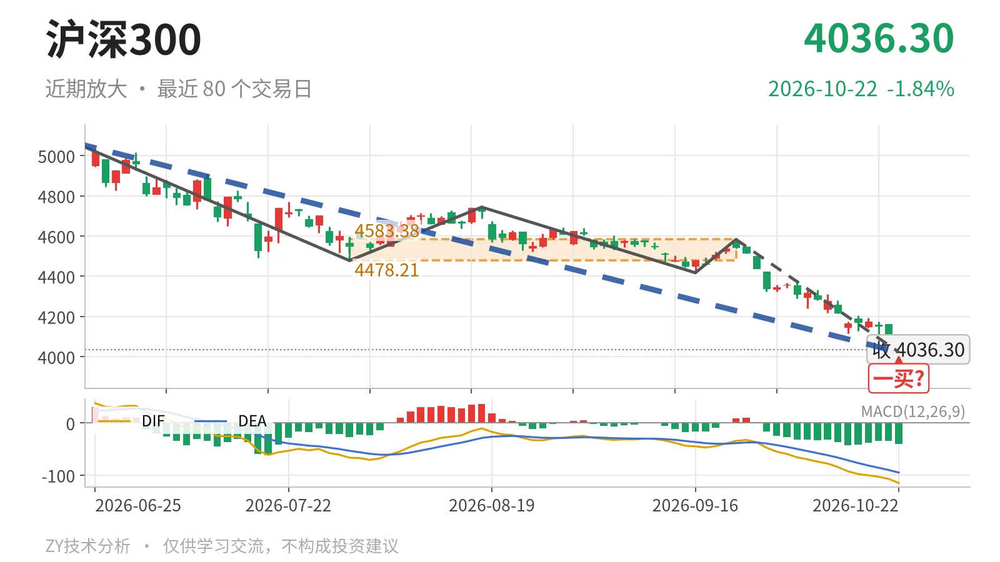

沪深300｜跌破4478中枢下沿，一买待定

最近日线中枢 4478.21—4583.38点，收盘位于中枢之下
一句话：收盘4036.30点跌破最近中枢，4022.87点为暂定一买
📉 走势结构：大级别上涨未坏，日线回调段仍在延续
当前仍处于大级别上涨中的深幅回调，而非上涨完全终结。更大级别走势里，2024年2月2日至2026年6月23日的上涨从3108.35点到5064.27点，涨约63%，这一段还在延续；但6月23日以来的下跌段同样没有结束，最新收盘4036.30点已把这段回调压到最近中枢下方。日线线段上，3月24日至6月23日的上涨线段已经结束，6月23日至10月22日的下跌线段还在延续，累计跌约20.6%。这意味着当前是上涨结构中的回落，但回落深度已经破坏了最近的日线中枢。

🧭 中枢与位置：跌破最近中枢，中轴明显下移
最新收盘4036.30点低于7月30日至9月22日中枢下沿4478.21点，距离下沿约441.91点。该中枢区间为4478.21—4583.38点，中轴4530.80点，目前未完成。对比前一个2月3日至3月17日中枢中轴4649.53点，中轴下移约118.73点，说明日线级别中枢在下移。下方紧邻2024年10月8日至2025年5月30日中枢3812.32—4200.91点，中轴4006.61点。当前价格与该中轴只差约29.69点。最近中枢已失守，短期结构明显向下脱离。
🔻 买卖点：10月22日低点只是暂定一买
10月22日低点4022.87点为日线笔级别一买，但其所在9月22日至10月22日下跌笔还在延续。因此只能算暂定的一买，会随这一笔延续而变化。往前看，1月13日一卖4836.95点、2月25日二卖4766.56点、3月17日类二卖4720.86点，卖点一个比一个低。这些卖点之后被6月23日5064.27点新高刷新，级别只落在1月13日至3月24日的下跌段里。3月24日一买4394.29点与6月8日二买4677.57点之后又创了新低，也只对应3月24日至6月23日的上涨段。

⚡ 背驰：DIF同步新低，面积尚无背离
最关键的同向对比是9月22日以来下跌笔与6月23日至7月30日下跌笔。价格从4478.21点一线下探至4022.87点，绿柱面积463小于前一笔的650，但DIF低点由-66.5继续下降到-115.1。这属于价格新低、DIF同步新低。这种形态不构成“新低不新弱”，只能说面积暂时弱于前一笔，力度指标没有出现衰减。9月22日以来这一笔还在延续，暂定一买没有背驰配合，后续要看绿柱是否收缩、DIF是否回升。
🎯 关键位置观察：反抽不回4478点，结构仍偏弱
后市看点不在预测跌幅，而在反抽的归属。若反抽不能回到4478.21—4583.38点中枢，结构上构成三卖，下跌段延续；若重新站上4583.38点，则当前下跌更可能只是中枢扩展，而不是趋势性离开。日线层面，4478.21点失守后成为最近的观察位。整体结构偏弱，弱在中枢被跌破、中轴下移，且DIF在零轴下方同步新低。10月22日的暂定一买没有改变这个格局。
⚠️ 本文为基于公开行情数据的缠论技术结构记录，由程序自动计算并生成，仅供学习交流，不构成任何投资建议。市场有风险，投资需谨慎。